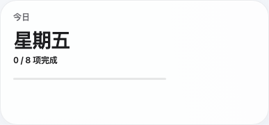
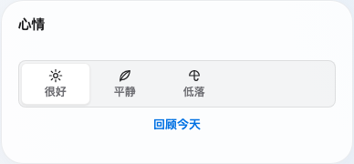
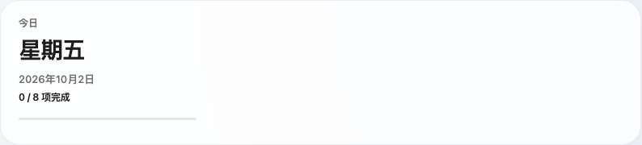
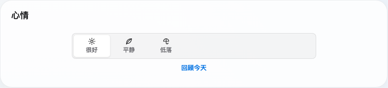
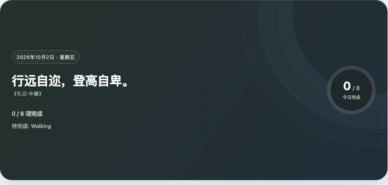
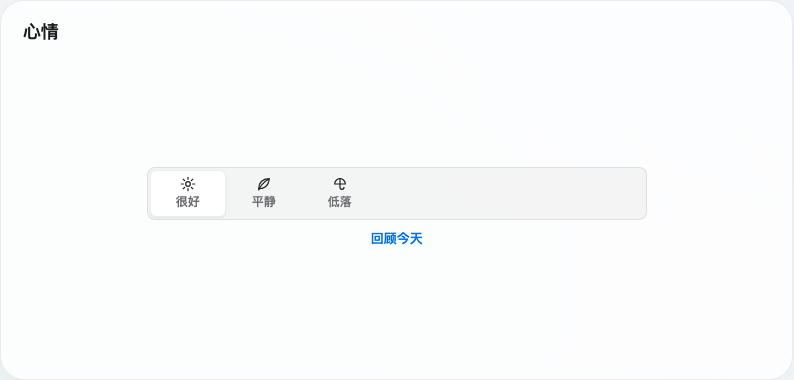
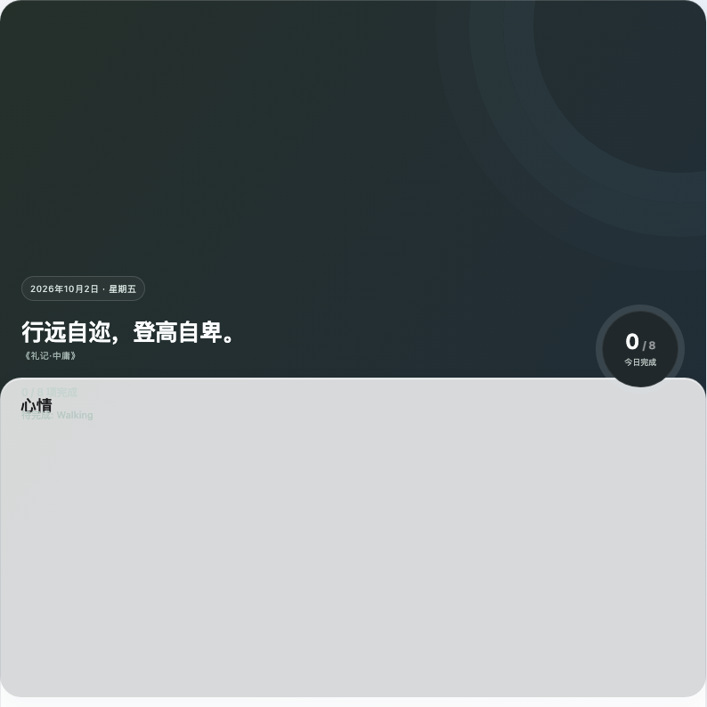
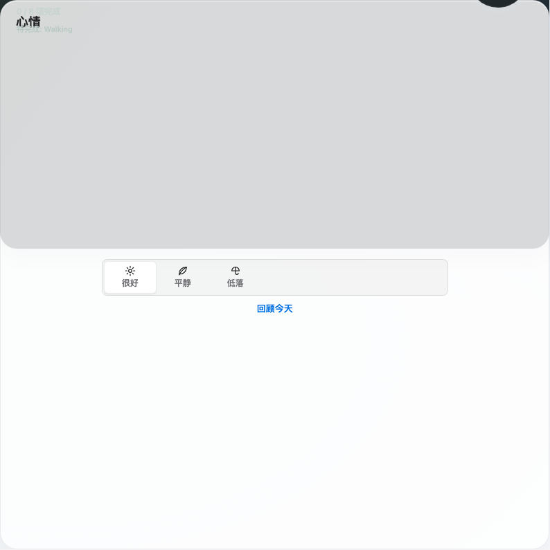
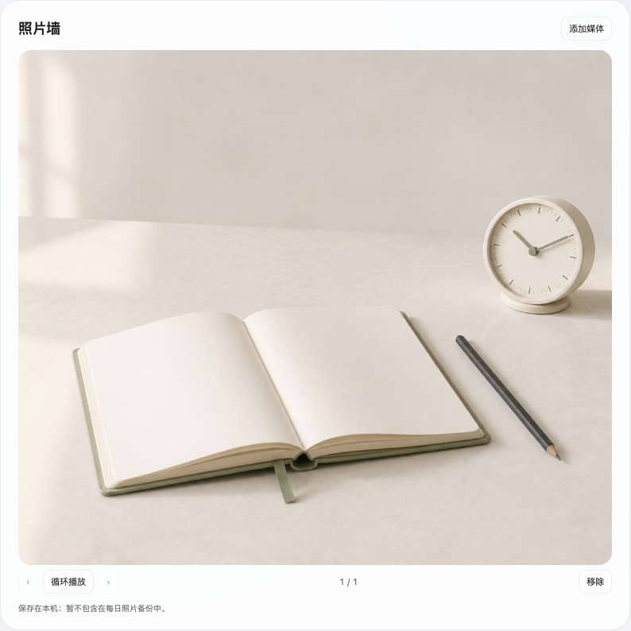
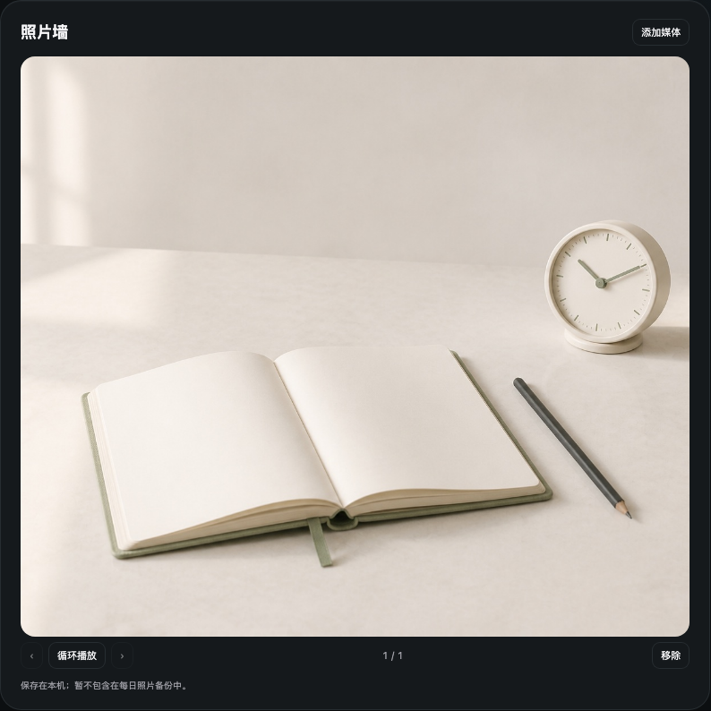

以下是实际桌面路由的截图，不是另一套应用或静态设计稿。欢迎与心情在同一预设下尺寸一致。这里把截图缩到相同栏宽方便比较，请以标注的实测尺寸为准；正式页面中可拖动排布和切换尺寸。
只保留优先信息和快速操作，不把长文字塞进小格。


更宽，不变高；适合并排信息、四项习惯、天气小时轴。


完整信息层级。习惯使用内部横向图标轨道，文字卡片不增加横向滚动。


同样的宽度，正方形画布；尤其适合照片墙。不是把所有内容机械放大。




示例数据均为虚构。天气截图为固定模拟预报，并非你的实时天气。尚未打包或替换已安装的 App，等待你确认视觉方向。